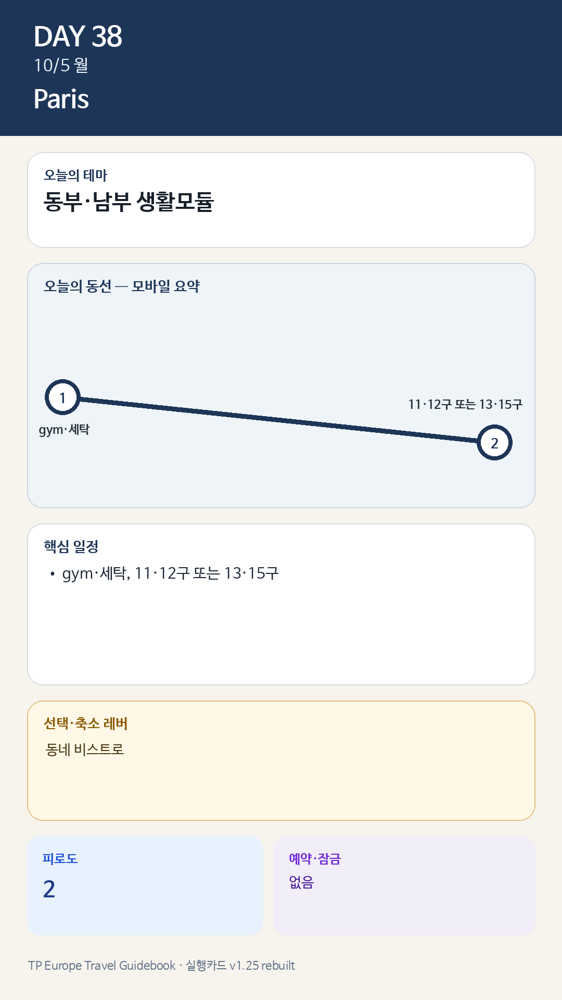

Day 38 · 10/5 월 · Paris
- 핵심 실행
- 생활모듈·세탁
- 권장 출발
- 느린 시작
- 완충
- 세탁 2시간 보호
시간표
이 날은 원고에 시각표가 없다. 구간 일정은 일정 한눈에 에 있다.
피로도
2/5
이 날의 메모
월요일 생활모듈 — 관광객이 적은 파리 한 구역을 골라 보기
오전에는 정식 운동과 세탁을 하고, 오후에는 숙소 위치에 따라 한 모듈만 선택한다.
오전 공통
- Jason gym 45–60분
- Julia 수영 또는 카페 선택
- 세탁·냉장고 정리·두 번째 주 장보기
- 숙소 점심
오후 선택 모듈
| 모듈 | 동선 | 적합한 경우 |
|---|---|---|
| A | Aligre–Coulée Verte–Bastille | 시장·생활·산책을 원할 때. 월요일 시장휴무 여부 확인 |
| B | Butte-aux-Cailles–Gobelins–Jardin des Plantes | 5구 숙소에서 생활권을 넓힐 때 |
| C | Convention–Parc André Citroën–Grenelle | 15구를 실제 거주지처럼 체험할 때 |
| D | Batignolles–Parc Monceau | 9구 숙소 또는 북서부 생활권이 궁금할 때 |
저녁: 해당 동네의 비스트로 또는 아시아 음식. 예약: 최대 1개.
상세 실행 확인
- 최고 리스크
- 휴관일·생활업무
- 우선 삭제
- 동부/남부 중 하나
- 대체안
- 숙소권 생활
- 식사·휴식
- 동네식
- 잠금 필요
- 없음
모바일 카드 이미지

카드의 지도영역은 일정 순서를 보여주는 개요이며 내비게이션이 아닙니다. 실제 도보·운전 경로는 Google Maps에서 다시 계산하세요.